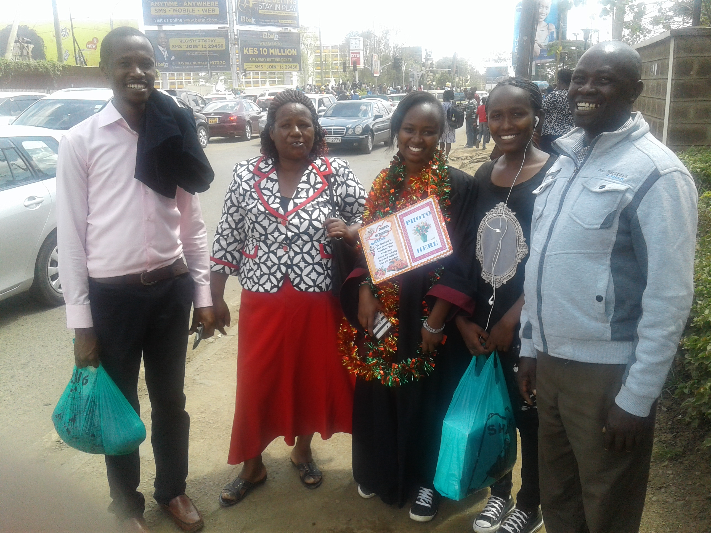

Nursary School
The biggest building with chairs and matress i have ever entered. It had kids like me but not as tall as i was.
That was the first experience i had
the first time i was taken to nursary school.
The school was located near Central Primary School In Kitui Township sublocation.
 click this to view the map
click this to view the map
Primary School
Central pri school was the name. The only thing i can remember about that place was the heafty slap i was given
by Mis Mohamed
after i decided to repeat class 7 without informing her.
Secondary School
Matinyani was the name given to my Secondary School. Neighbouring secondary schools used to call it Manyani reffering us to monkeys.
It was one of the places which shaped me and modeled my character especially with the help of my role model 'Pasco'
 click this to view the map